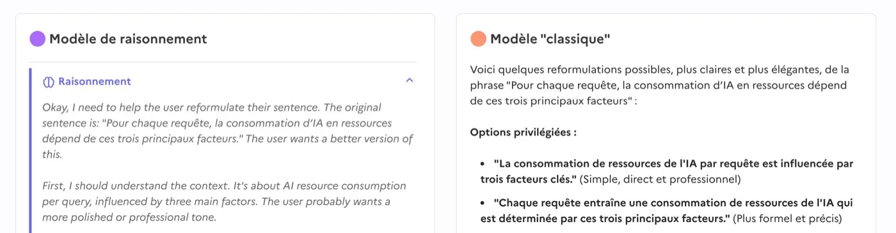

Support 2 sur 7
Ce qui fait consommer un modèle
La taille, le texte produit, l'architecture. Et ce que la mesure en dit.
La taille
Une quantité de paramètres
27B = 27 milliards
Un paramètre est un nombre appris pendant l'entraînement. Il règle comment le modèle transforme une entrée en sortie.
Sur compar:IA, le compte s'affiche en tête de la fiche : « 27 mds de paramètres ».
Fiche de Qwen/Qwen 3.8 27B sur compar:IA.
La taille
Les classes de taille
compar:IA range chaque modèle dans une classe, selon son nombre total de paramètres.
Seuils de classe de taille appliqués par compar:IA. La taille des disques illustre l'ordre des classes, pas leurs écarts.
La taille
Quatre modèles, quatre tailles
| Modèle | Paramètres | Classe |
|---|---|---|
| Anthropic/Claude Sonnet 5.5 | non publié | Taille estimée XL |
| Nvidia/Nemotron 3.5 Super VL | 120 milliards | L |
| Swiss AI/Apertus 1.5 70B | 70 milliards | M |
| Qwen/Qwen 3.8 27B | 27 milliards | S |
Catalogue compar:IA, modèles sortis depuis juillet 2026. Classes calculées avec les seuils de la diapositive précédente.
Les jetons
Le texte devient des jetons
Le modèle ne lit pas des lettres ni des mots : il lit des morceaux.
Un mot courant tient en un jeton. Un mot rare est découpé. L'espace part avec le morceau qui suit.
Découpage indicatif, il varie d'un modèle à l'autre. Sur compar:IA, un jeton vaut à peu près quatre lettres.
Les jetons
Un jeton, puis on recommence
Le modèle ne rédige pas une réponse d'un bloc : il ajoute un jeton, en tenant compte de tout ce qui précède, puis en ajoute un autre.
Une réponse de trois cents mots demande de l'ordre de quatre cents tours de cette boucle. C'est pourquoi la consommation se compte par jeton produit, et non par message.
Les jetons
À quoi servent les jetons
Découper
Le texte devient des morceaux que le modèle sait traiter.
Mesurer
Ils mesurent ce que le modèle peut lire d'un coup : c'est la taille du contexte.
Facturer
Le coût d'utilisation se compte au jeton, en entrée et en sortie.
Les jetons
Même un merci se paie
245 mWh
pour répondre à un simple « merci », avec Llama 3.1 8B. Soit 0,245 Wh, autant qu'une ampoule de 6 W allumée deux minutes et demie.
Avant de répondre, le modèle relit toute la conversation. Plus elle est longue, plus cette lecture coûte : chaque jeton d'entrée ajoute un peu d'énergie.
Delavande, Pierrard et Luccioni, « Small Talk, Big Impact », prépublication, janvier 2026. Moyenne sur 10 000 échanges, une carte H100, une requête à la fois, refroidissement non compté.
L'architecture
Les mélanges d'experts
Plusieurs experts dans un même modèle, dont une poignée seulement travaille pour chaque jeton.
- Le jeton entre.
- Un routeur choisit les experts les plus adaptés.
- Seuls ceux-là calculent.
- La sortie part.
L'architecture
Au total, et vraiment actifs
125 mds
au total, à loger dans la mémoire.
6 mds
actifs par jeton : seuls ceux-là calculent.
La fiche d'un modèle ouvert en mélange d'experts porte la ligne « Dont N mds actifs ».
Fiche de Qwen/Qwen 3.8 Flash Next sur compar:IA.
L'architecture
Avantages et limites
Avantages
- Moins de calcul pour chaque jeton produit.
- Moins d'électricité, à taille comparable.
- Donc moins cher à utiliser.
Inconvénients
- Prend beaucoup de place dans la mémoire de la machine.
- Plus complexe à développer.
- Se débrouille parfois moins bien hors de ce qu'il a vu.
Le raisonnement
Deux façons de répondre
Modèle « classique »
Il écrit la réponse directement. Ce que vous lisez, c'est tout ce qu'il a produit.
Modèle de raisonnement
Il écrit d'abord un brouillon pour lui-même : il pose le problème, essaie, se corrige. Puis il rédige la réponse.
Certains modèles proposent un mode raisonnement activable : il produit des jetons de réflexion avant la réponse finale.
Le raisonnement
Le brouillon, à l'écran
À gauche, le raisonnement déplié ; à droite, la réponse directe. Le brouillon est souvent replié ou caché.

Le raisonnement
Le brouillon se paie aussi
Jetons produits par question à choix multiples, en moyenne.
Ces jetons de réflexion sont des jetons de sortie, comme la réponse. Invisibles pour le lecteur, ils comptent dans le total.
Dauner et Socher, « Energy costs of communicating with AI », Frontiers in Communication, 2025. En réponse libre : 435 jetons de réponse et 859 de réflexion.
Les mesures
Trois leviers, une fois mesurés
L'Arcep et le PEReN ont mesuré l'électricité des cartes graphiques pour 22 modèles ouverts, à travail égal.
Mélange d'experts
− 45 %
d'électricité, face à un modèle dense de taille comparable.
Paramètres arrondis
− 39 %
d'électricité, quand chaque paramètre est arrondi à 8 ou 4 bits.
Mode réflexion
+ 92 %
d'électricité en moyenne pour le modèle le plus touché, et + 849 % sur une tâche de code.
Arcep et PEReN, mai 2026. Moyennes sur 22 modèles, supercalculateur public Jean Zay. Les processeurs, exclus de la mesure, pèsent environ un tiers de l'énergie totale.
Les mesures
La taille ne dit pas tout
Sur ces mêmes 22 modèles, à travail et matériel identiques.
- Des modèles de tailles très différentes peuvent dépenser autant l'un que l'autre.
- Des modèles à faible consommation obtiennent des résultats équivalents à des modèles consommant davantage.
La consommation ne suffit donc pas, à elle seule, à prédire la qualité.
Arcep et PEReN, « Intelligence artificielle générative : quels défis environnementaux ? », mai 2026. Modèles de 3 à 123 milliards de paramètres, supercalculateur Jean Zay.
Les mesures
Deux modèles, la démonstration
Qwen/Qwen 3.8 Flash Next
125 mds, dont 6 actifs.
347 Wh
Swiss AI/Apertus 1.5 70B
70 mds, tous actifs.
658 Wh
Presque deux fois plus de paramètres, et pourtant deux fois moins d'énergie par jeton. Les deux sont dans l'arène.
Catalogue compar:IA, énergie estimée par million de jetons produits.
Les mesures
Tout le catalogue, d'un coup d'œil
Ouvert, dense Ouvert, mélange d'experts Propriétaire, taille estimée
Catalogue compar:IA, 34 modèles en service au 12 novembre 2026. Consommation calculée par EcoLogits 0.10.2. Deux axes logarithmiques : ×10 par graduation verticale.
Les mesures
Ce que le nuage montre
La taille compte
Le nuage monte de gauche à droite : plus gros, plus gourmand.
L'architecture aussi
Vers 120 milliards de paramètres, les mélanges d'experts consomment deux à trois fois moins que le modèle dense.
Les ronds vides sont estimés
Un modèle propriétaire ne publie pas sa taille : son point repose sur une estimation.
Ces points sont des estimations : EcoLogits les calcule à partir de la taille totale, qui fixe le nombre de cartes graphiques, et des paramètres actifs.
Documentation d'EcoLogits et catalogue compar:IA, 34 modèles en service au 12 novembre 2026.
Images et vidéo
Et les images ?
En 2024, une mesure sur 88 modèles donnait un ordre de grandeur net.
Près de soixante fois plus pour une image.
Luccioni, Jernite et Strubell, « Power Hungry Processing: Watts Driving the Cost of AI Deployment? », FAccT 2024. Mesures sur cartes A100, une requête à la fois, sur des modèles de 2023.
Images et vidéo
Le rapport dépend du modèle
| Modèles ouverts, mesures de 2025 | Énergie par réponse ou par image |
|---|---|
| Llama 3.1 8B, une réponse | 0,03 Wh |
| Stable Diffusion 3 Medium, une image standard | 0,63 Wh |
| Llama 3.1 405B, une réponse | 1,86 Wh |
Dans ces mesures, une réponse du plus grand modèle coûte trois fois une image ; une réponse du petit, vingt fois moins.
Jae-Won Chung, ML.Energy, dans la MIT Technology Review, mai 2025. Image de 1 024 pixels de côté, qualité standard. Énergie des cartes doublée par hypothèse.
Images et vidéo
Et la vidéo ?
Aucun fournisseur ne publie de chiffre. Ni pour Sora, ni pour Veo, ni pour Runway.
Les repères mesurés viennent de modèles ouverts. Pour une vidéo de quelques secondes : de 0,1 Wh à 360 Wh selon le modèle et la définition de l'image.
Les chiffres qui circulent pour les modèles propriétaires sont déduits du temps de réponse. Ils mesurent surtout les hypothèses de leurs auteurs.
Delavande, Pierrard et Luccioni, arXiv 2509.19222, septembre 2025. Sept modèles ouverts, une carte H100, électricité de la carte seule.
À retenir
Ce qu'il faut retenir
- Le compteur, ce sont les jetons produits. Une réponse longue coûte plus qu'une réponse courte.
- Un mélange d'experts n'active qu'une part de ses paramètres. Dans les essais de l'Arcep et du PEReN : 45 % d'électricité en moins qu'un dense de taille comparable.
- Les plus grands modèles restent généralement les plus consommateurs, mais l'architecture distingue les tailles voisines.
- Le mode raisonnement augmente la consommation ; son gain dépend de la tâche.